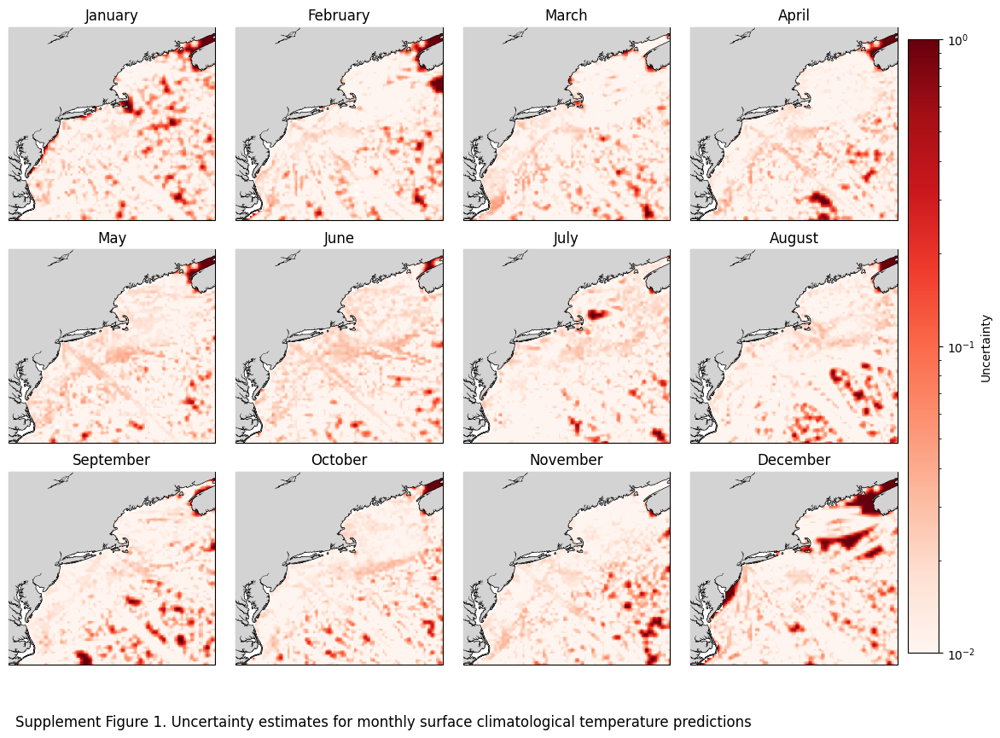
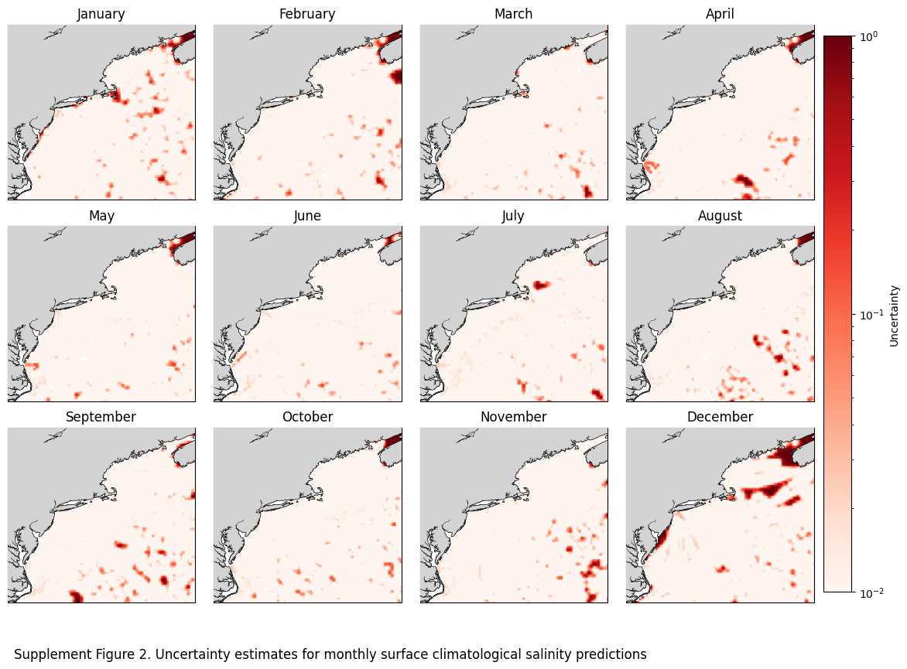
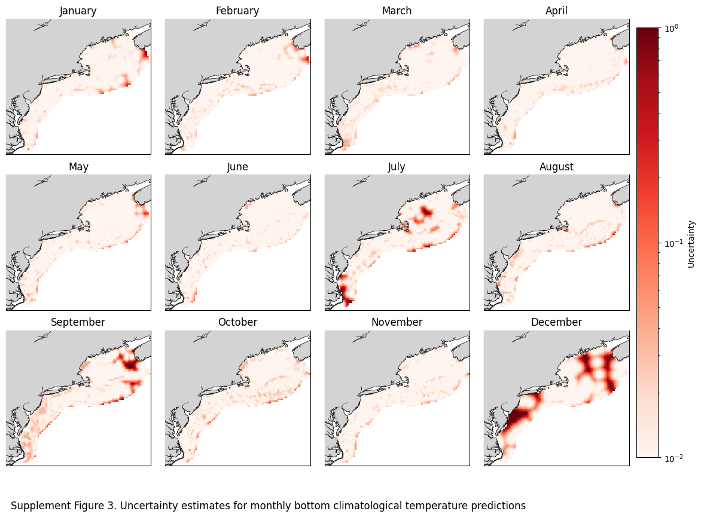
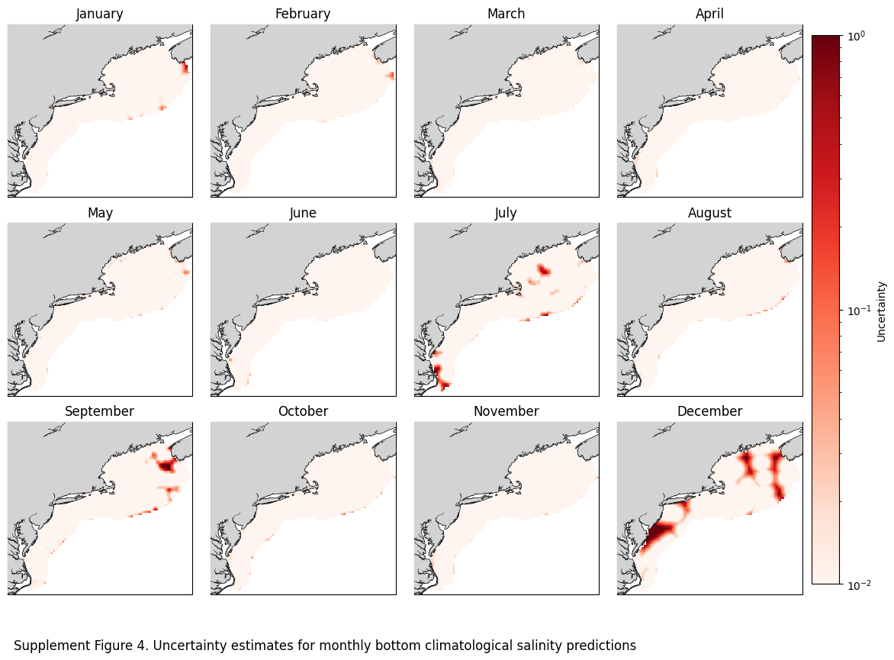

Supplementary figures#
Objectives:#
Create supplementary figures used in Synan et al 2026.
Dependencies:#
Access to the climatologies (netcdf files)
import xarray as xr
import matplotlib.pyplot as plt
import cartopy
from matplotlib.colors import LogNorm
import calendar
import os
ds_surf = xr.open_dataset(r'W:\nadata\PROJECTS\NESCAPES\PROCESSED_DATA\FINAL\hydrographic_climatology_surface_2000_2024.nc')
print('surface gridded climatology opened')
ds_bot = xr.open_dataset(r'W:\nadata\PROJECTS\NESCAPES\PROCESSED_DATA\FINAL\hydrographic_climatology_bottom_2000_2024.nc')
print('bottom gridded climatology opened')
---------------------------------------------------------------------------
KeyError Traceback (most recent call last)
File ~\AppData\Local\anaconda3\Lib\site-packages\xarray\backends\file_manager.py:211, in CachingFileManager._acquire_with_cache_info(self, needs_lock)
210 try:
--> 211 file = self._cache[self._key]
212 except KeyError:
File ~\AppData\Local\anaconda3\Lib\site-packages\xarray\backends\lru_cache.py:56, in LRUCache.__getitem__(self, key)
55 with self._lock:
---> 56 value = self._cache[key]
57 self._cache.move_to_end(key)
KeyError: [<class 'netCDF4._netCDF4.Dataset'>, ('W:\\nadata\\PROJECTS\\NESCAPES\\PROCESSED_DATA\\FINAL\\hydrographic_climatology_surface_2000_2024.nc',), 'r', (('clobber', True), ('diskless', False), ('format', 'NETCDF4'), ('persist', False)), '2842b8ad-5450-470d-bce1-84c48279e395']
During handling of the above exception, another exception occurred:
FileNotFoundError Traceback (most recent call last)
Cell In[2], line 1
----> 1 ds_surf = xr.open_dataset(r'W:\nadata\PROJECTS\NESCAPES\PROCESSED_DATA\FINAL\hydrographic_climatology_surface_2000_2024.nc')
2 print('surface gridded climatology opened')
3 ds_bot = xr.open_dataset(r'W:\nadata\PROJECTS\NESCAPES\PROCESSED_DATA\FINAL\hydrographic_climatology_bottom_2000_2024.nc')
File ~\AppData\Local\anaconda3\Lib\site-packages\xarray\backends\api.py:573, in open_dataset(filename_or_obj, engine, chunks, cache, decode_cf, mask_and_scale, decode_times, decode_timedelta, use_cftime, concat_characters, decode_coords, drop_variables, inline_array, chunked_array_type, from_array_kwargs, backend_kwargs, **kwargs)
561 decoders = _resolve_decoders_kwargs(
562 decode_cf,
563 open_backend_dataset_parameters=backend.open_dataset_parameters,
(...)
569 decode_coords=decode_coords,
570 )
572 overwrite_encoded_chunks = kwargs.pop("overwrite_encoded_chunks", None)
--> 573 backend_ds = backend.open_dataset(
574 filename_or_obj,
575 drop_variables=drop_variables,
576 **decoders,
577 **kwargs,
578 )
579 ds = _dataset_from_backend_dataset(
580 backend_ds,
581 filename_or_obj,
(...)
591 **kwargs,
592 )
593 return ds
File ~\AppData\Local\anaconda3\Lib\site-packages\xarray\backends\netCDF4_.py:646, in NetCDF4BackendEntrypoint.open_dataset(self, filename_or_obj, mask_and_scale, decode_times, concat_characters, decode_coords, drop_variables, use_cftime, decode_timedelta, group, mode, format, clobber, diskless, persist, lock, autoclose)
625 def open_dataset( # type: ignore[override] # allow LSP violation, not supporting **kwargs
626 self,
627 filename_or_obj: str | os.PathLike[Any] | BufferedIOBase | AbstractDataStore,
(...)
643 autoclose=False,
644 ) -> Dataset:
645 filename_or_obj = _normalize_path(filename_or_obj)
--> 646 store = NetCDF4DataStore.open(
647 filename_or_obj,
648 mode=mode,
649 format=format,
650 group=group,
651 clobber=clobber,
652 diskless=diskless,
653 persist=persist,
654 lock=lock,
655 autoclose=autoclose,
656 )
658 store_entrypoint = StoreBackendEntrypoint()
659 with close_on_error(store):
File ~\AppData\Local\anaconda3\Lib\site-packages\xarray\backends\netCDF4_.py:409, in NetCDF4DataStore.open(cls, filename, mode, format, group, clobber, diskless, persist, lock, lock_maker, autoclose)
403 kwargs = dict(
404 clobber=clobber, diskless=diskless, persist=persist, format=format
405 )
406 manager = CachingFileManager(
407 netCDF4.Dataset, filename, mode=mode, kwargs=kwargs
408 )
--> 409 return cls(manager, group=group, mode=mode, lock=lock, autoclose=autoclose)
File ~\AppData\Local\anaconda3\Lib\site-packages\xarray\backends\netCDF4_.py:356, in NetCDF4DataStore.__init__(self, manager, group, mode, lock, autoclose)
354 self._group = group
355 self._mode = mode
--> 356 self.format = self.ds.data_model
357 self._filename = self.ds.filepath()
358 self.is_remote = is_remote_uri(self._filename)
File ~\AppData\Local\anaconda3\Lib\site-packages\xarray\backends\netCDF4_.py:418, in NetCDF4DataStore.ds(self)
416 @property
417 def ds(self):
--> 418 return self._acquire()
File ~\AppData\Local\anaconda3\Lib\site-packages\xarray\backends\netCDF4_.py:412, in NetCDF4DataStore._acquire(self, needs_lock)
411 def _acquire(self, needs_lock=True):
--> 412 with self._manager.acquire_context(needs_lock) as root:
413 ds = _nc4_require_group(root, self._group, self._mode)
414 return ds
File ~\AppData\Local\anaconda3\Lib\contextlib.py:137, in _GeneratorContextManager.__enter__(self)
135 del self.args, self.kwds, self.func
136 try:
--> 137 return next(self.gen)
138 except StopIteration:
139 raise RuntimeError("generator didn't yield") from None
File ~\AppData\Local\anaconda3\Lib\site-packages\xarray\backends\file_manager.py:199, in CachingFileManager.acquire_context(self, needs_lock)
196 @contextlib.contextmanager
197 def acquire_context(self, needs_lock=True):
198 """Context manager for acquiring a file."""
--> 199 file, cached = self._acquire_with_cache_info(needs_lock)
200 try:
201 yield file
File ~\AppData\Local\anaconda3\Lib\site-packages\xarray\backends\file_manager.py:217, in CachingFileManager._acquire_with_cache_info(self, needs_lock)
215 kwargs = kwargs.copy()
216 kwargs["mode"] = self._mode
--> 217 file = self._opener(*self._args, **kwargs)
218 if self._mode == "w":
219 # ensure file doesn't get overridden when opened again
220 self._mode = "a"
File src\\netCDF4\\_netCDF4.pyx:2469, in netCDF4._netCDF4.Dataset.__init__()
File src\\netCDF4\\_netCDF4.pyx:2028, in netCDF4._netCDF4._ensure_nc_success()
FileNotFoundError: [Errno 2] No such file or directory: 'W:\\nadata\\PROJECTS\\NESCAPES\\PROCESSED_DATA\\FINAL\\hydrographic_climatology_surface_2000_2024.nc'
Set directory for figure output#
fig_dir = r'C:\Users\haley.synan\Documents\SEASCAPES\CODE\FIGURES'
Supplemental figure 1#
fig, axs = plt.subplots(nrows=3, ncols=4, figsize=(16, 11),
subplot_kw={'projection': cartopy.crs.PlateCarree()})
axs_flat = axs.flatten()
for x, ax in enumerate(axs_flat):
im=ax.pcolormesh(ds_surf.longitude,ds_surf.latitude,ds_surf.CT_unc[x],norm=LogNorm(vmin=0.01, vmax=1.0),cmap='Reds')
ax.add_feature(cartopy.feature.COASTLINE, linewidth=1) #add coastlines
ax.add_feature(cartopy.feature.LAND, zorder=100, facecolor='lightgrey') #
ax.set_title(calendar.month_name[x+1])
ax.set_extent([-77,-64.8,34.6,46])
fig.subplots_adjust(hspace=-0.2, wspace=0.1)
caption_text = "Supplement Figure 1. Uncertainty estimates for monthly surface climatological temperature predictions"
plt.figtext(0.13, 0.09, caption_text, wrap=True, horizontalalignment='left', fontsize=12)
cbar = fig.colorbar(im, ax=axs,label='Uncertainty',pad=0.01,shrink=0.85)
plt.savefig(os.path.join(fig_dir,'DP_sup1.jpg'), dpi=600,bbox_inches='tight')

Supplemental figure 2#
fig, axs = plt.subplots(nrows=3, ncols=4, figsize=(16, 11),
subplot_kw={'projection': cartopy.crs.PlateCarree()})
axs_flat = axs.flatten()
for x, ax in enumerate(axs_flat):
im=ax.pcolormesh(ds_surf.longitude,ds_surf.latitude,ds_surf.SA_unc[x],norm=LogNorm(vmin=0.01, vmax=1.0),cmap='Reds')
ax.add_feature(cartopy.feature.COASTLINE, linewidth=1) #add coastlines
ax.add_feature(cartopy.feature.LAND, zorder=100, facecolor='lightgrey') #
ax.set_title(calendar.month_name[x+1])
ax.set_extent([-77,-64.8,34.6,46])
fig.subplots_adjust(hspace=-0.2, wspace=0.1)
caption_text = "Supplement Figure 2. Uncertainty estimates for monthly surface climatological salinity predictions"
plt.figtext(0.13, 0.09, caption_text, wrap=True, horizontalalignment='left', fontsize=12)
cbar = fig.colorbar(im, ax=axs,label='Uncertainty',pad=0.01,shrink=0.85)
plt.savefig(os.path.join(fig_dir,'DP_sup2.jpg'), dpi=600,bbox_inches='tight')

Supplemental figure 3#
fig, axs = plt.subplots(nrows=3, ncols=4, figsize=(16, 11),
subplot_kw={'projection': cartopy.crs.PlateCarree()})
axs_flat = axs.flatten()
for x, ax in enumerate(axs_flat):
im=ax.pcolormesh(ds_bot.longitude,ds_bot.latitude,ds_bot.CT_unc[x],norm=LogNorm(vmin=0.01, vmax=1.0),cmap='Reds')
ax.add_feature(cartopy.feature.COASTLINE, linewidth=1) #add coastlines
ax.add_feature(cartopy.feature.LAND, zorder=100, facecolor='lightgrey') #
ax.set_title(calendar.month_name[x+1])
ax.set_extent([-77,-64.8,34.6,46])
fig.subplots_adjust(hspace=-0.2, wspace=0.1)
caption_text = "Supplement Figure 3. Uncertainty estimates for monthly bottom climatological temperature predictions"
plt.figtext(0.13, 0.09, caption_text, wrap=True, horizontalalignment='left', fontsize=12)
cbar = fig.colorbar(im, ax=axs,label='Uncertainty',pad=0.01,shrink=0.85)
plt.savefig(os.path.join(fig_dir,'DP_sup3.jpg'), dpi=600,bbox_inches='tight')

Supplemental figure 4#
fig, axs = plt.subplots(nrows=3, ncols=4, figsize=(16, 11),
subplot_kw={'projection': cartopy.crs.PlateCarree()})
axs_flat = axs.flatten()
for x, ax in enumerate(axs_flat):
im=ax.pcolormesh(ds_bot.longitude,ds_bot.latitude,ds_bot.SA_unc[x],norm=LogNorm(vmin=0.01, vmax=1.0),cmap='Reds')
ax.add_feature(cartopy.feature.COASTLINE, linewidth=1) #add coastlines
ax.add_feature(cartopy.feature.LAND, zorder=100, facecolor='lightgrey') #
ax.set_title(calendar.month_name[x+1])
ax.set_extent([-77,-64.8,34.6,46])
fig.subplots_adjust(hspace=-0.2, wspace=0.1)
caption_text = "Supplement Figure 4. Uncertainty estimates for monthly bottom climatological salinity predictions"
plt.figtext(0.13, 0.09, caption_text, wrap=True, horizontalalignment='left', fontsize=12)
cbar = fig.colorbar(im, ax=axs,label='Uncertainty',pad=0.01,shrink=0.85)
plt.savefig(os.path.join(fig_dir,'DP_sup4.jpg'), dpi=600,bbox_inches='tight')
